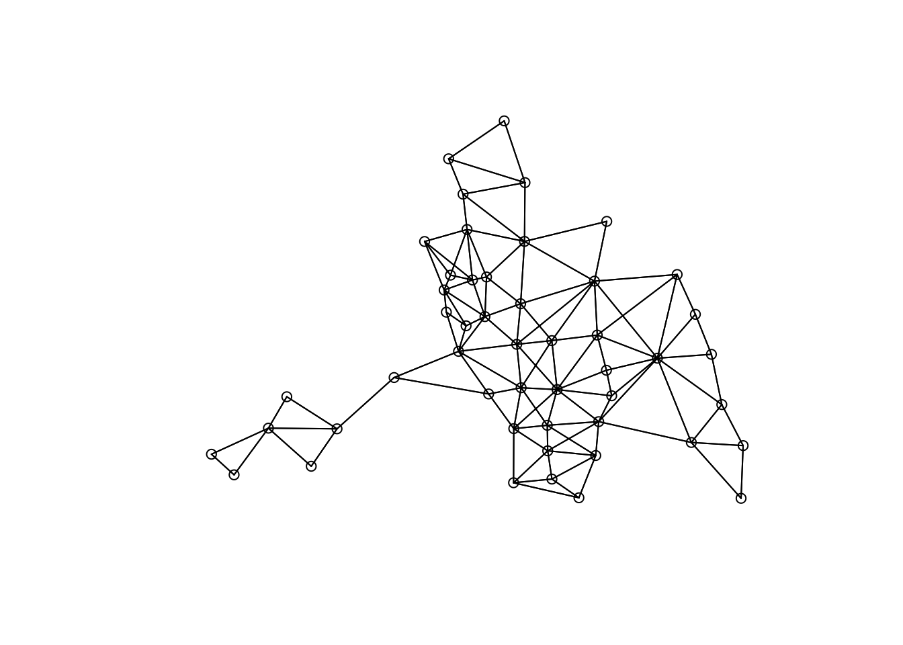

library(spdep)## Loading required package: spData## To access larger datasets in this package, install the spDataLarge package with:
## `install.packages('spDataLarge', repos='https://nowosad.github.io/drat/', type='source')`## Loading required package: sf## Linking to GEOS 3.13.0, GDAL 3.8.5, PROJ 9.5.1; sf_use_s2() is TRUElibrary(spatialreg)## Loading required package: Matrix##
## Attaching package: 'Matrix'## The following objects are masked from 'package:tidyr':
##
## expand, pack, unpack##
## Attaching package: 'spatialreg'## The following objects are masked from 'package:spdep':
##
## get.ClusterOption, get.coresOption, get.mcOption, get.VerboseOption,
## get.ZeroPolicyOption, set.ClusterOption, set.coresOption, set.mcOption,
## set.VerboseOption, set.ZeroPolicyOption#read data (it is already in the program so do not need to download it)
data(columbus)
mydata <- columbus
#use "attach" to prevent typing "$" for every variables
attach(mydata)
#Col.gal.nb provides an adjacency list of neighbors. We give it a better name
neighbors <- col.gal.nb
#check the class of the adjacency list
class(neighbors)## [1] "nb"Note: it is an ‘nb’ or ‘neighborhood’ object. Usually we need to first convert a dataframe to ‘nb’, and then to a ‘weighted list - listw’ object.
#dataframe to nb
#class(dataframe) <- “nb”
#nb2listw(nblist)Another approach (which is more suitable when having isolates) is to first make an adjacency matrix. Then you can use: listw<-mat2listw(adjacencymatrix).
#convert nb to listw
#style = "W" means row-standardize
listw <- nb2listw(neighbors, style = "W")
summary(listw)## Characteristics of weights list object:
## Neighbour list object:
## Number of regions: 49
## Number of nonzero links: 230
## Percentage nonzero weights: 9.579342
## Average number of links: 4.693878
## Link number distribution:
##
## 2 3 4 5 6 7 8 9 10
## 7 7 13 4 9 6 1 1 1
## 7 least connected regions:
## 1005 1008 1045 1047 1049 1048 1015 with 2 links
## 1 most connected region:
## 1017 with 10 links
##
## Weights style: W
## Weights constants summary:
## n nn S0 S1 S2
## W 49 2401 49 23.48489 204.6687We see that an average region has about 5 neighbors.
summary(CRIME)## Min. 1st Qu. Median Mean 3rd Qu. Max.
## 0.1783 20.0485 34.0008 35.1288 48.5855 68.8920summary(INC)## Min. 1st Qu. Median Mean 3rd Qu. Max.
## 4.477 9.963 13.380 14.375 18.324 31.070summary(HOVAL)## Min. 1st Qu. Median Mean 3rd Qu. Max.
## 17.90 25.70 33.50 38.44 43.30 96.40plot(neighbors, coords)
olsreg <- lm(CRIME ~ INC + HOVAL)
summary(olsreg)##
## Call:
## lm(formula = CRIME ~ INC + HOVAL)
##
## Residuals:
## Min 1Q Median 3Q Max
## -34.418 -6.388 -1.580 9.052 28.649
##
## Coefficients:
## Estimate Std. Error t value Pr(>|t|)
## (Intercept) 68.6190 4.7355 14.490 < 2e-16 ***
## INC -1.5973 0.3341 -4.780 1.83e-05 ***
## HOVAL -0.2739 0.1032 -2.654 0.0109 *
## ---
## Signif. codes: 0 '***' 0.001 '**' 0.01 '*' 0.05 '.' 0.1 ' ' 1
##
## Residual standard error: 11.43 on 46 degrees of freedom
## Multiple R-squared: 0.5524, Adjusted R-squared: 0.5329
## F-statistic: 28.39 on 2 and 46 DF, p-value: 9.341e-09#see whether we need a spatial model in the first place
moran.test(CRIME, listw)##
## Moran I test under randomisation
##
## data: CRIME
## weights: listw
##
## Moran I statistic standard deviate = 5.3427, p-value = 4.578e-08
## alternative hypothesis: greater
## sample estimates:
## Moran I statistic Expectation Variance
## 0.485770914 -0.020833333 0.008991121#null hypothesis: no spatial dependence
# p<0.05 null hypothesis rejected, we should use spatial model#which type of spatial models we should use
lm.LMtests(olsreg, listw, test=c("LMlag", "LMerr"))## Please update scripts to use lm.RStests in place of lm.LMtests##
## Rao's score (a.k.a Lagrange multiplier) diagnostics for spatial dependence
##
## data:
## model: lm(formula = CRIME ~ INC + HOVAL)
## test weights: listw
##
## RSlag = 7.8557, df = 1, p-value = 0.005066
##
##
## Rao's score (a.k.a Lagrange multiplier) diagnostics for spatial dependence
##
## data:
## model: lm(formula = CRIME ~ INC + HOVAL)
## test weights: listw
##
## RSerr = 4.6111, df = 1, p-value = 0.03177#null hypothesis:no spatial lag dependence
#null hypothesis:no spatial error dependence
#both rejected in this caseslm <- lagsarlm(CRIME ~ INC + HOVAL, data = mydata, listw, Durbin = "FALSE")
summary(slm)##
## Call:lagsarlm(formula = CRIME ~ INC + HOVAL, data = mydata, listw = listw, Durbin = "FALSE")
##
## Residuals:
## Min 1Q Median 3Q Max
## -37.4497093 -5.4565567 0.0016387 6.7159553 24.7107978
##
## Type: lag
## Coefficients: (asymptotic standard errors)
## Estimate Std. Error z value Pr(>|z|)
## (Intercept) 46.851431 7.314754 6.4051 1.503e-10
## INC -1.073533 0.310872 -3.4533 0.0005538
## HOVAL -0.269997 0.090128 -2.9957 0.0027381
##
## Rho: 0.40389, LR test value: 8.4179, p-value: 0.0037154
## Asymptotic standard error: 0.12071
## z-value: 3.3459, p-value: 0.00082027
## Wald statistic: 11.195, p-value: 0.00082027
##
## Log likelihood: -183.1683 for lag model
## ML residual variance (sigma squared): 99.164, (sigma: 9.9581)
## Number of observations: 49
## Number of parameters estimated: 5
## AIC: 376.34, (AIC for lm: 382.75)
## LM test for residual autocorrelation
## test value: 0.19184, p-value: 0.66139#inspect direct and indirect effect
#use a simulation with 200 iterations to obtain p-values
# ‘zstats = TRUE’ to obtain p-values
im<-impacts(slm, listw = listw, zstats=TRUE, R=200)
sums<-summary(im, zstats=T)
#effect value(simulated)
data.frame(sums$res)## direct indirect total
## 1 -1.1225156 -0.6783818 -1.8008973
## 2 -0.2823163 -0.1706152 -0.4529315#effect p-value(simulated)
data.frame(sums$pzmat)## Direct Indirect Total
## INC dy/dx 0.0006434935 0.07852279 0.001896196
## HOVAL dy/dx 0.0043876937 0.14051477 0.020550682sem <- errorsarlm(CRIME ~ INC + HOVAL, data = mydata, listw, Durbin = FALSE)
summary(sem)##
## Call:errorsarlm(formula = CRIME ~ INC + HOVAL, data = mydata, listw = listw, Durbin = FALSE)
##
## Residuals:
## Min 1Q Median 3Q Max
## -34.45950 -6.21730 -0.69775 7.65256 24.23631
##
## Type: error
## Coefficients: (asymptotic standard errors)
## Estimate Std. Error z value Pr(>|z|)
## (Intercept) 61.053618 5.314875 11.4873 < 2.2e-16
## INC -0.995473 0.337025 -2.9537 0.0031398
## HOVAL -0.307979 0.092584 -3.3265 0.0008794
##
## Lambda: 0.52089, LR test value: 6.4441, p-value: 0.011132
## Asymptotic standard error: 0.14129
## z-value: 3.6868, p-value: 0.00022713
## Wald statistic: 13.592, p-value: 0.00022713
##
## Log likelihood: -184.1552 for error model
## ML residual variance (sigma squared): 99.98, (sigma: 9.999)
## Number of observations: 49
## Number of parameters estimated: 5
## AIC: 378.31, (AIC for lm: 382.75)sac <- sacsarlm(CRIME ~ INC + HOVAL, data = mydata, listw, Durbin = FALSE)
summary(sac)##
## Call:sacsarlm(formula = CRIME ~ INC + HOVAL, data = mydata, listw = listw, Durbin = FALSE)
##
## Residuals:
## Min 1Q Median 3Q Max
## -37.1121 -4.6324 -0.3040 7.0306 24.6929
##
## Type: sac
## Coefficients: (asymptotic standard errors)
## Estimate Std. Error z value Pr(>|z|)
## (Intercept) 49.051431 10.054986 4.8783 1.07e-06
## INC -1.068781 0.332839 -3.2111 0.001322
## HOVAL -0.283114 0.091526 -3.0933 0.001980
##
## Rho: 0.35326
## Asymptotic standard error: 0.19669
## z-value: 1.796, p-value: 0.072494
## Lambda: 0.13199
## Asymptotic standard error: 0.29905
## z-value: 0.44138, p-value: 0.65894
##
## LR test value: 8.6082, p-value: 0.013513
##
## Log likelihood: -183.0731 for sac model
## ML residual variance (sigma squared): 99.423, (sigma: 9.9711)
## Number of observations: 49
## Number of parameters estimated: 6
## AIC: 378.15, (AIC for lm: 382.75)*both rho and lamda are insignificant now
#Impact: distinguish direct and indirect effects
im2<-impacts(sac, listw = listw, zstats=TRUE, R=200)
sums2<-summary(im2, zstats=T)
data.frame(sums2$res)## direct indirect total
## 1 -1.1045773 -0.5479948 -1.652572
## 2 -0.2925956 -0.1451604 -0.437756data.frame(sums2$pzmat)## Direct Indirect Total
## INC dy/dx 0.0007704884 0.7358440 0.4581173
## HOVAL dy/dx 0.0050274880 0.6689089 0.4091779sdm <- lagsarlm(CRIME ~ INC + HOVAL, data = mydata, listw, Durbin = TRUE)
summary(sdm)##
## Call:lagsarlm(formula = CRIME ~ INC + HOVAL, data = mydata, listw = listw, Durbin = TRUE)
##
## Residuals:
## Min 1Q Median 3Q Max
## -37.15904 -6.62594 -0.39823 6.57561 23.62757
##
## Type: mixed
## Coefficients: (asymptotic standard errors)
## Estimate Std. Error z value Pr(>|z|)
## (Intercept) 45.592893 13.128679 3.4728 0.0005151
## INC -0.939088 0.338229 -2.7765 0.0054950
## HOVAL -0.299605 0.090843 -3.2980 0.0009736
## lag.INC -0.618375 0.577052 -1.0716 0.2838955
## lag.HOVAL 0.266615 0.183971 1.4492 0.1472760
##
## Rho: 0.38251, LR test value: 4.1648, p-value: 0.041272
## Asymptotic standard error: 0.16237
## z-value: 2.3557, p-value: 0.018488
## Wald statistic: 5.5493, p-value: 0.018488
##
## Log likelihood: -182.0161 for mixed model
## ML residual variance (sigma squared): 95.051, (sigma: 9.7494)
## Number of observations: 49
## Number of parameters estimated: 7
## AIC: 378.03, (AIC for lm: 380.2)
## LM test for residual autocorrelation
## test value: 0.101, p-value: 0.75063#Impact: distinguish direct and indirect effects
im3<-impacts(sdm, listw = listw, zstats=TRUE, R=200)
sums3<-summary(im3, zstats=T)
data.frame(sums3$res)## direct indirect total
## 1 -1.0418080 -1.4804246 -2.52223256
## 2 -0.2836325 0.2302055 -0.05342697data.frame(sums3$pzmat)## Direct Indirect Total
## INC dy/dx 0.0007435359 0.03856474 0.000433107
## HOVAL dy/dx 0.0048064774 0.41986537 0.894074585sdem <- errorsarlm(CRIME ~ INC + HOVAL, data = mydata, listw, Durbin = TRUE)
summary(sdem)##
## Call:errorsarlm(formula = CRIME ~ INC + HOVAL, data = mydata, listw = listw, Durbin = TRUE)
##
## Residuals:
## Min 1Q Median 3Q Max
## -37.02060 -6.68585 -0.15142 6.51557 24.18199
##
## Type: error
## Coefficients: (asymptotic standard errors)
## Estimate Std. Error z value Pr(>|z|)
## (Intercept) 73.258655 8.528043 8.5903 < 2.2e-16
## INC -1.069530 0.324719 -3.2937 0.0009887
## HOVAL -0.280344 0.091809 -3.0535 0.0022615
## lag.INC -1.196774 0.568968 -2.1034 0.0354297
## lag.HOVAL 0.146758 0.200872 0.7306 0.4650196
##
## Lambda: 0.37613, LR test value: 3.7313, p-value: 0.053403
## Asymptotic standard error: 0.16554
## z-value: 2.2721, p-value: 0.023079
## Wald statistic: 5.1626, p-value: 0.023079
##
## Log likelihood: -182.2329 for error model
## ML residual variance (sigma squared): 96.022, (sigma: 9.7991)
## Number of observations: 49
## Number of parameters estimated: 7
## AIC: 378.47, (AIC for lm: 380.2)gnm <- sacsarlm(CRIME ~ INC + HOVAL, data = mydata, listw, Durbin = TRUE)
summary(gnm)##
## Call:sacsarlm(formula = CRIME ~ INC + HOVAL, data = mydata, listw = listw, Durbin = TRUE)
##
## Residuals:
## Min 1Q Median 3Q Max
## -37.36766 -6.68648 -0.44936 6.38015 23.80258
##
## Type: sacmixed
## Coefficients: (asymptotic standard errors)
## Estimate Std. Error z value Pr(>|z|)
## (Intercept) 50.35976 63.33587 0.7951 0.426542
## INC -0.96203 0.43539 -2.2096 0.027135
## HOVAL -0.29462 0.10275 -2.8674 0.004139
## lag.INC -0.72000 1.61312 -0.4463 0.655352
## lag.HOVAL 0.24470 0.26967 0.9074 0.364187
##
## Rho: 0.31731
## Asymptotic standard error: 0.87681
## z-value: 0.36189, p-value: 0.71743
## Lambda: 0.090483
## Asymptotic standard error: 1.0184
## z-value: 0.088845, p-value: 0.92921
##
## LR test value: 10.756, p-value: 0.029453
##
## Log likelihood: -181.9994 for sacmixed model
## ML residual variance (sigma squared): 95.975, (sigma: 9.7967)
## Number of observations: 49
## Number of parameters estimated: 8
## AIC: 380, (AIC for lm: 382.75)#Impact: distinguish direct and indirect effects
im4<-impacts(gnm, listw = listw, zstats=TRUE, R=200)
sums4<-summary(im4, zstats=T)
data.frame(sums4$res)## direct indirect total
## 1 -1.0470529 -1.4167854 -2.46383828
## 2 -0.2820784 0.2089587 -0.07311966data.frame(sums4$pzmat)## Direct Indirect Total
## INC dy/dx 0.008810136 0.8853647 0.7811163
## HOVAL dy/dx 0.107393653 0.9576303 0.92038731&2.
library(igraph)
library(haven) # to read Stata files
library(reshape2)
library(tidyverse)
PupilsWaveV <- read_dta(file = "PupilsWaveV.dta")
grep("acthomew", names(PupilsWaveV), value = TRUE)## [1] "acthomew"table(PupilsWaveV$acthomew)##
## 1 2 3 4 5 9
## 1056 1317 577 24 5 1table(PupilsWaveV$sex)##
## 1 2
## 1464 1532PupilsWaveV <- subset(PupilsWaveV, acthomew >= 1 & acthomew <= 5)
PupilsWaveV$female <- ifelse(PupilsWaveV$sex == 2, 0, 1)
table(PupilsWaveV$acthomew)##
## 1 2 3 4 5
## 1056 1317 577 24 5table(PupilsWaveV$female)##
## 0 1
## 1523 1456PupilsWaveV$acthomew_r <- 6 - PupilsWaveV$acthomew
table(PupilsWaveV$acthomew_r)##
## 1 2 3 4 5
## 5 24 577 1317 1056table(PupilsWaveV$female)##
## 0 1
## 1523 1456attach(PupilsWaveV)## The following object is masked _by_ .GlobalEnv:
##
## sexsummary(acthomew_r)## Min. 1st Qu. Median Mean 3rd Qu. Max.
## 1.00 4.00 4.00 4.14 5.00 5.00summary(female)## Min. 1st Qu. Median Mean 3rd Qu. Max.
## 0.0000 0.0000 0.0000 0.4888 1.0000 1.0000summary(age)## Min. 1st Qu. Median Mean 3rd Qu. Max. NA's
## 10.00 12.00 12.00 12.11 12.00 15.00 34reg <- lm(acthomew_r ~ female + age)
summary(reg)##
## Call:
## lm(formula = acthomew_r ~ female + age)
##
## Residuals:
## Min 1Q Median 3Q Max
## -3.1591 -0.1591 -0.1206 0.8409 0.8932
##
## Coefficients:
## Estimate Std. Error t value Pr(>|t|)
## (Intercept) 3.95489 0.34595 11.432 <2e-16 ***
## female 0.03849 0.02806 1.372 0.170
## age 0.01381 0.02843 0.486 0.627
## ---
## Signif. codes: 0 '***' 0.001 '**' 0.01 '*' 0.05 '.' 0.1 ' ' 1
##
## Residual standard error: 0.7587 on 2942 degrees of freedom
## (34 observations deleted due to missingness)
## Multiple R-squared: 0.0006868, Adjusted R-squared: 7.449e-06
## F-statistic: 1.011 on 2 and 2942 DF, p-value: 0.3643.
library(lme4)
multi <- lmer(formula = acthomew_r ~ 1 + female + age + (1 | schoolnr),
data = PupilsWaveV, REML = FALSE)
summary(multi)## Linear mixed model fit by maximum likelihood ['lmerMod']
## Formula: acthomew_r ~ 1 + female + age + (1 | schoolnr)
## Data: PupilsWaveV
##
## AIC BIC logLik -2*log(L) df.resid
## 6725.9 6755.8 -3357.9 6715.9 2940
##
## Scaled residuals:
## Min 1Q Median 3Q Max
## -4.2046 -0.2911 -0.1456 1.0682 1.3970
##
## Random effects:
## Groups Name Variance Std.Dev.
## schoolnr (Intercept) 0.01231 0.1109
## Residual 0.56270 0.7501
## Number of obs: 2945, groups: schoolnr, 125
##
## Fixed effects:
## Estimate Std. Error t value
## (Intercept) 4.00018 0.35036 11.417
## female 0.03962 0.02797 1.417
## age 0.01008 0.02877 0.350
##
## Correlation of Fixed Effects:
## (Intr) female
## female -0.121
## age -0.998 0.0824.
#filter class 12b
c12b <- subset(PupilsWaveV, schoolnr == "12b")
library(network)
library(igraph)
library(reshape2)
library(tidyverse)
elist <- c12b %>%
select(namenr, friend1:friend12) %>% # select only the " best friends" network
pivot_longer(c(friend1:friend12)) %>%
filter(!is.na(value)) %>% # drop the missings
rename(from ="namenr", to = "value", sourcevar= "name") %>% #just nice for interpretation
relocate(to, .after=from) #move around the columns
nodelist <- c12b %>%
select(namenr,sex, age) %>%
rename(name = "namenr")
classnet <- graph_from_data_frame(elist, vertices = nodelist)
adjmatrix <- as_adjacency_matrix(classnet, sparse = FALSE)
adjmatrix## 1 2 3 4 5 6 7 8 9 10 11 12 13 14 15 16 17 18 19 20 21 22 23 24 25 26
## 1 0 0 1 0 0 1 0 0 0 0 0 1 0 0 0 0 0 0 0 0 0 0 0 0 0 0
## 2 0 0 0 0 0 0 1 1 0 1 0 0 0 0 0 0 0 0 0 0 0 0 0 0 0 0
## 3 1 1 0 0 0 1 1 0 0 0 0 1 0 0 0 0 0 0 0 0 0 0 0 0 0 0
## 4 0 0 0 0 0 0 0 1 0 1 0 0 0 0 0 0 0 1 0 0 0 0 1 0 0 0
## 5 0 0 0 0 0 0 0 0 0 0 0 0 0 1 0 1 0 0 0 0 0 0 0 0 1 0
## 6 0 0 1 0 0 0 0 0 0 0 1 1 0 0 1 0 0 0 0 0 1 0 0 0 0 0
## 7 0 1 1 0 0 0 0 0 0 1 0 1 0 0 0 0 0 0 0 0 0 0 0 0 0 0
## 8 0 0 0 1 0 0 0 0 0 1 0 0 0 0 0 0 0 1 0 0 0 0 1 0 0 0
## 9 1 1 1 0 0 1 1 1 0 0 1 1 0 0 1 0 0 0 0 0 0 0 0 1 0 0
## 10 0 1 0 0 0 0 0 1 0 0 0 0 0 0 1 0 0 0 0 0 0 0 1 0 0 0
## 11 0 0 0 0 0 0 0 0 0 0 0 0 0 0 0 0 1 0 0 0 1 0 0 0 0 0
## 12 1 1 1 0 0 1 1 1 0 1 0 0 0 0 0 0 0 0 0 0 0 1 0 0 0 0
## 13 0 0 0 1 0 0 0 0 0 0 0 0 0 0 0 0 0 1 0 0 0 0 1 0 0 1
## 14 0 0 0 1 1 0 0 0 0 0 0 0 0 0 0 0 0 1 0 0 0 0 1 0 1 0
## 15 0 0 0 0 0 0 0 0 0 0 0 0 0 0 0 0 0 0 0 0 0 0 0 0 0 0
## 16 0 0 0 0 0 0 0 0 0 0 0 0 0 0 0 0 0 0 0 0 0 0 0 0 1 0
## 17 0 0 0 0 0 0 0 0 0 0 0 0 0 0 0 0 0 0 0 0 0 1 0 0 0 0
## 18 0 1 0 1 0 0 1 1 0 1 0 0 1 0 0 0 0 0 0 0 0 0 1 0 0 0
## 19 0 0 0 0 0 0 0 0 0 0 0 0 0 0 0 0 0 0 0 1 0 1 0 0 0 0
## 20 0 0 0 0 0 0 0 0 0 0 0 0 0 0 0 0 0 0 1 0 0 1 0 0 0 0
## 21 0 0 0 0 0 0 0 0 0 0 1 0 0 0 0 0 0 0 0 0 0 0 0 0 0 0
## 22 0 0 0 0 0 0 0 0 0 0 0 0 0 0 0 0 1 0 1 1 0 0 0 0 0 0
## 23 0 0 0 1 0 0 0 1 0 1 0 0 0 0 0 0 0 1 0 0 0 0 0 0 0 0
## 24 0 1 0 0 0 1 0 0 1 0 0 0 0 0 0 0 0 0 0 0 0 0 0 0 0 0
## 25 0 0 0 0 0 0 0 0 0 0 0 0 0 1 0 1 0 0 0 0 0 0 0 0 0 0
## 26 0 0 0 0 0 0 0 0 0 0 0 0 1 0 0 0 0 0 0 0 0 0 0 0 0 0class(adjmatrix)## [1] "matrix" "array"5.
library(spdep)
library(spatialreg)
listw <- mat2listw(adjmatrix, style = "W", zero.policy = TRUE)
summary(listw)## Characteristics of weights list object:
## Neighbour list object:
## Number of regions: 26
## Number of nonzero links: 91
## Percentage nonzero weights: 13.46154
## Average number of links: 3.5
## 1 region with no links:
## 15
## Non-symmetric neighbours list
## Link number distribution:
##
## 0 1 2 3 4 5 7 8 10
## 1 4 4 5 6 3 1 1 1
## 4 least connected regions:
## 16 17 21 26 with 1 link
## 1 most connected region:
## 9 with 10 links
##
## Weights style: W
## Weights constants summary:
## n nn S0 S1 S2
## W 25 625 25 16.67107 103.69676.
moran.test(c12b$acthomew_r, listw, zero.policy = TRUE)##
## Moran I test under randomisation
##
## data: c12b$acthomew_r
## weights: listw
## n reduced by no-neighbour observations
##
## Moran I statistic standard deviate = -1.2823, p-value = 0.9001
## alternative hypothesis: greater
## sample estimates:
## Moran I statistic Expectation Variance
## -0.24084048 -0.04166667 0.02412595#no no spatial dependence
reg12b <- lm(acthomew_r ~ female+age, data = c12b)
lm.LMtests(reg12b, listw, test = c("LMlag", "LMerr"), zero.policy = TRUE)## Please update scripts to use lm.RStests in place of lm.LMtests##
## Rao's score (a.k.a Lagrange multiplier) diagnostics for spatial dependence
##
## data:
## model: lm(formula = acthomew_r ~ female + age, data = c12b)
## test weights: listw
##
## RSlag = 4.1142, df = 1, p-value = 0.04252
##
##
## Rao's score (a.k.a Lagrange multiplier) diagnostics for spatial dependence
##
## data:
## model: lm(formula = acthomew_r ~ female + age, data = c12b)
## test weights: listw
##
## RSerr = 2.1604, df = 1, p-value = 0.1416# spatial lag dependence exists
# no spatial error dependence7.
slm <- lagsarlm(acthomew_r ~ female + age, data = c12b, listw, Durbin = "FALSE", zero.policy = TRUE)
summary(slm)##
## Call:lagsarlm(formula = acthomew_r ~ female + age, data = c12b, listw = listw,
## Durbin = "FALSE", zero.policy = TRUE)
##
## Residuals:
## Min 1Q Median 3Q Max
## -1.142192 -0.323879 -0.038523 0.455646 1.080405
##
## Type: lag
## Regions with no neighbours included:
## 15
## Coefficients: (asymptotic standard errors)
## Estimate Std. Error z value Pr(>|z|)
## (Intercept) 0.985703 3.281733 0.3004 0.7639
## female 0.040444 0.266647 0.1517 0.8794
## age 0.392051 0.282600 1.3873 0.1653
##
## Rho: -0.38703, LR test value: 5.6789, p-value: 0.01717
## Asymptotic standard error: 0.13865
## z-value: -2.7915, p-value: 0.0052465
## Wald statistic: 7.7925, p-value: 0.0052465
##
## Log likelihood: -25.8883 for lag model
## ML residual variance (sigma squared): 0.4134, (sigma: 0.64297)
## Number of observations: 26
## Number of parameters estimated: 5
## AIC: 61.777, (AIC for lm: 65.456)
## LM test for residual autocorrelation
## test value: 0.73981, p-value: 0.38972#inspect direct and indirect effect
#use a simulation with 200 iterations to obtain p-values
# ‘zstats = TRUE’ to obtain p-values
im<-impacts(slm, listw = listw, zstats=TRUE, R=200)
sums<-summary(im, zstats=T)
#effect value(simulated)
data.frame(sums$res)## direct indirect total
## 1 0.04194955 -0.01279066 0.02915889
## 2 0.40664250 -0.12398763 0.28265487#effect p-value(simulated)
data.frame(sums$pzmat)## Direct Indirect Total
## female dy/dx 0.9112146 0.9367278 0.902520
## age dy/dx 0.1603031 0.2355242 0.1520958.
sem <- errorsarlm(acthomew_r ~ female + age, data = c12b, listw, Durbin = FALSE, zero.policy = TRUE)
summary(sem)##
## Call:errorsarlm(formula = acthomew_r ~ female + age, data = c12b,
## listw = listw, Durbin = FALSE, zero.policy = TRUE)
##
## Residuals:
## Min 1Q Median 3Q Max
## -1.219368 -0.362548 -0.058648 0.668676 0.912751
##
## Type: error
## Regions with no neighbours included:
## 15
## Coefficients: (asymptotic standard errors)
## Estimate Std. Error z value Pr(>|z|)
## (Intercept) 3.562833 3.153258 1.1299 0.2585
## female 0.063223 0.173322 0.3648 0.7153
## age 0.047439 0.258850 0.1833 0.8546
##
## Lambda: -0.6606, LR test value: 4.4195, p-value: 0.03553
## Asymptotic standard error: 0.20347
## z-value: -3.2466, p-value: 0.0011678
## Wald statistic: 10.541, p-value: 0.0011678
##
## Log likelihood: -26.51801 for error model
## ML residual variance (sigma squared): 0.40272, (sigma: 0.6346)
## Number of observations: 26
## Number of parameters estimated: 5
## AIC: 63.036, (AIC for lm: 65.456)sac <- sacsarlm(acthomew_r ~ female + age, data = c12b, listw, Durbin = FALSE, zero.policy = TRUE)
summary(sac)##
## Call:sacsarlm(formula = acthomew_r ~ female + age, data = c12b, listw = listw,
## Durbin = FALSE, zero.policy = TRUE)
##
## Residuals:
## Min 1Q Median 3Q Max
## -1.20129 -0.39250 -0.02661 0.52543 0.96313
##
## Type: sac
## Coefficients: (asymptotic standard errors)
## Estimate Std. Error z value Pr(>|z|)
## (Intercept) 1.579810 3.250948 0.4860 0.6270
## female 0.049605 0.187263 0.2649 0.7911
## age 0.308392 0.289345 1.0658 0.2865
##
## Rho: -0.28578
## Asymptotic standard error: 0.16817
## z-value: -1.6993, p-value: 0.08926
## Lambda: -0.46509
## Asymptotic standard error: 0.28125
## z-value: -1.6536, p-value: 0.098202
##
## LR test value: 7.0894, p-value: 0.028877
##
## Log likelihood: -25.18307 for sac model
## ML residual variance (sigma squared): 0.37746, (sigma: 0.61437)
## Number of observations: 26
## Number of parameters estimated: 6
## AIC: 62.366, (AIC for lm: 65.456)#Impact: distinguish direct and indirect effects
im<-impacts(sac, listw = listw, zstats=TRUE, R=200)
sums<-summary(im, zstats=T)
data.frame(sums$res)## direct indirect total
## 1 0.05059934 -0.01201928 0.03858006
## 2 0.31457037 -0.07472253 0.23984785data.frame(sums$pzmat)## Direct Indirect Total
## female dy/dx 0.8717900 0.9055733 0.8677339
## age dy/dx 0.3817369 0.4169770 0.39637869.
sdm <- lagsarlm(acthomew_r ~ female + age, data = c12b, listw, Durbin = TRUE, zero.policy = TRUE)
summary(sdm)##
## Call:lagsarlm(formula = acthomew_r ~ female + age, data = c12b, listw = listw,
## Durbin = TRUE, zero.policy = TRUE)
##
## Residuals:
## Min 1Q Median 3Q Max
## -1.135203 -0.394884 -0.070046 0.556823 1.000595
##
## Type: mixed
## Regions with no neighbours included:
## 15
## Coefficients: (asymptotic standard errors)
## Estimate Std. Error z value Pr(>|z|)
## (Intercept) 1.20440 3.17587 0.3792 0.7045
## female -0.13428 0.53517 -0.2509 0.8019
## age 0.36041 0.29359 1.2276 0.2196
## lag.female 0.25747 0.61108 0.4213 0.6735
## lag.age 0.11016 0.10613 1.0379 0.2993
##
## Rho: -0.67899, LR test value: 4.4907, p-value: 0.034081
## Asymptotic standard error: 0.19745
## z-value: -3.4389, p-value: 0.00058413
## Wald statistic: 11.826, p-value: 0.00058413
##
## Log likelihood: -25.15936 for mixed model
## ML residual variance (sigma squared): 0.36029, (sigma: 0.60024)
## Number of observations: 26
## Number of parameters estimated: 7
## AIC: 64.319, (AIC for lm: 66.809)
## LM test for residual autocorrelation
## test value: 1.8668, p-value: 0.17184sdem <- errorsarlm(acthomew_r ~ female + age, data = c12b, listw, Durbin = TRUE, zero.policy = TRUE)
summary(sdem)##
## Call:errorsarlm(formula = acthomew_r ~ female + age, data = c12b,
## listw = listw, Durbin = TRUE, zero.policy = TRUE)
##
## Residuals:
## Min 1Q Median 3Q Max
## -1.026601 -0.370501 -0.026601 0.463311 0.941782
##
## Type: error
## Regions with no neighbours included:
## 15
## Coefficients: (asymptotic standard errors)
## Estimate Std. Error z value Pr(>|z|)
## (Intercept) 1.96268 3.07793 0.6377 0.52369
## female -0.66948 0.52570 -1.2735 0.20284
## age 0.31653 0.28479 1.1115 0.26636
## lag.female 0.83964 0.59342 1.4149 0.15709
## lag.age -0.14550 0.07921 -1.8369 0.06622
##
## Lambda: -0.77077, LR test value: 4.7916, p-value: 0.028599
## Asymptotic standard error: 0.17951
## z-value: -4.2937, p-value: 1.7569e-05
## Wald statistic: 18.436, p-value: 1.7569e-05
##
## Log likelihood: -25.00887 for error model
## ML residual variance (sigma squared): 0.34276, (sigma: 0.58546)
## Number of observations: 26
## Number of parameters estimated: 7
## AIC: 64.018, (AIC for lm: 66.809)gnm <- sacsarlm(acthomew_r ~ female + age, data = c12b, listw, Durbin = TRUE, zero.policy = TRUE)
summary(gnm)##
## Call:sacsarlm(formula = acthomew_r ~ female + age, data = c12b, listw = listw,
## Durbin = TRUE, zero.policy = TRUE)
##
## Residuals:
## Min 1Q Median 3Q Max
## -1.107697 -0.318783 -0.043815 0.504896 0.990339
##
## Type: sacmixed
## Coefficients: (asymptotic standard errors)
## Estimate Std. Error z value Pr(>|z|)
## (Intercept) 1.4932295 3.1212281 0.4784 0.6324
## female -0.5305867 0.5322993 -0.9968 0.3189
## age 0.3550197 0.2890705 1.2281 0.2194
## lag.female 0.6968227 0.5972557 1.1667 0.2433
## lag.age -0.0016074 0.3937229 -0.0041 0.9967
##
## Rho: -0.4164
## Asymptotic standard error: 1.134
## z-value: -0.36719, p-value: 0.71348
## Lambda: -0.5705
## Asymptotic standard error: 1.0614
## z-value: -0.5375, p-value: 0.59092
##
## LR test value: 8.5989, p-value: 0.071945
##
## Log likelihood: -24.42832 for sacmixed model
## ML residual variance (sigma squared): 0.33852, (sigma: 0.58182)
## Number of observations: 26
## Number of parameters estimated: 8
## AIC: 64.857, (AIC for lm: 65.456)